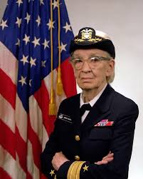
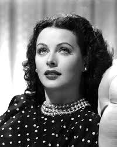

- Ada Lovelace
- Grace Hopper
- Hedy Lamarr
- Katherine Johnson
- Radia Perlman
- Sheryl Sandberg
Ada Lovelace, cujo nome de nascimento era Augusta Ada Byron King, foi uma figura pioneira na história da computação, frequentemente reconhecida como a primeira programadora da história. Nascida em 10 de dezembro de 1815, em Londres, Inglaterra, Ada era filha do famoso poeta Lord Byron e da matemática Lady Byron. Em meados do século XIX, Ada trabalhou com o matemático Charles Babbage, que estava desenvolvendo a Máquina Analítica, um precursor dos computadores modernos. Ada escreveu um algoritmo detalhado para a máquina, que é considerado o primeiro programa de computador da história.

Grace Hopper foi uma cientista da computação e almirante da Marinha dos Estados Unidos, frequentemente chamada de "Vovó COBOL". Nascida em 1906, ela foi uma figura fundamental na história da programação, deixando um legado que moldou a forma como interagimos com os computadores hoje. Hopper foi uma das primeiras programadoras do computador Harvard Mark I e liderou o desenvolvimento de uma das primeiras linguagens de programação de alto nível, o FLOW-MATIC. Essa linguagem, por sua vez, serviu de base para a criação do COBOL, uma das linguagens mais populares para aplicações comerciais durante décadas.

Hedy Lamarr foi uma figura fascinante que combinou duas carreiras aparentemente opostas: a de uma das atrizes mais belas e famosas de Hollywood e a de uma inventora visionária. Para além da beleza, Lamarr possuía uma mente inquieta e curiosa. Em parceria com o compositor George Antheil, ela desenvolveu um sistema de comunicação secreto que utilizava frequências de rádio que "pulavam" constantemente. Essa invenção, conhecida como "espalhamento espectral", tinha como objetivo dificultar a interceptação de sinais de rádio, como os utilizados em comunicações militares. Embora sua invenção tenha sido inicialmente ignorada, o princípio do espalhamento espectral se tornou fundamental para o desenvolvimento de tecnologias modernas como Wi-Fi, GPS e Bluetooth.
Katherine Johnson foi uma matemática, física e cientista espacial norte-americana que desempenhou um papel fundamental na história da exploração espacial. Seus cálculos precisos e meticulosos foram cruciais para o sucesso das primeiras missões espaciais dos Estados Unidos. Em uma época em que os computadores ainda estavam em desenvolvimento, Johnson realizava cálculos complexos à mão com precisão incrível. Mesmo com o avanço da tecnologia, Johnson era responsável por verificar os resultados dos computadores, garantindo a confiabilidade dos dados.
Radia Perlman é uma figura fundamental na história da internet, frequentemente chamada de "mãe da internet". Sua principal contribuição foi a invenção do Protocolo Spanning Tree (STP), um algoritmo que revolucionou a forma como as redes de computadores se conectam e funcionam. Imagine uma rede de computadores como uma floresta. As árvores representam os dispositivos e os caminhos entre elas representam as conexões. Se houver muitos caminhos entre as árvores, a rede pode se tornar instável e até mesmo entrar em um loop infinito. O STP funciona como um jardineiro, identificando e removendo os caminhos redundantes, garantindo que a rede funcione de forma eficiente e confiável. Perlman dedicou sua carreira ao estudo e desenvolvimento de protocolos de rede, contribuindo para a criação de uma internet mais robusta e escalável.

Sheryl Sandberg é uma executiva de tecnologia norte-americana, filantropa e autora, amplamente reconhecida por seu papel como Diretora de Operações (COO) do Facebook (agora Meta). Sua influência se estende muito além da esfera tecnológica, abrangendo temas como empoderamento feminino, liderança e o futuro do trabalho. Sob a liderança de Sandberg, o Facebook se transformou em uma das maiores empresas de mídia social do mundo. Ela foi fundamental para o crescimento da empresa e para a monetização de sua plataforma através da publicidade. Ela é uma forte defensora da igualdade de gênero no ambiente de trabalho e tem utilizado sua plataforma para promover a diversidade e a inclusão.